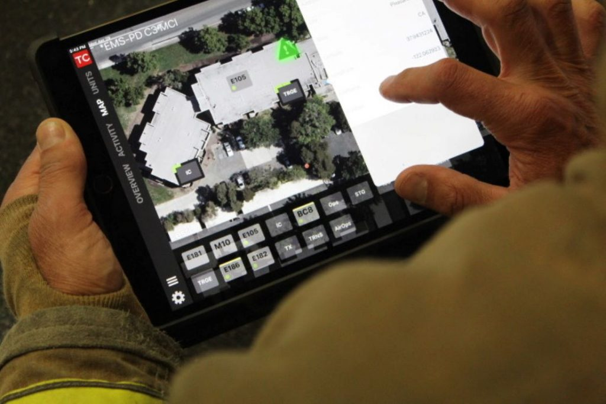

FireSafe Application

Explore FireSafe application prototype designed to revolutionize fire management by optimizing communication, enhancing situational awareness and improving resource allocation.
Download FireSafe- Delivering real-time updates and location tracking for active fire incidents.
- Providing a detailed map of the fire area, complete with hazard overlays and resource locations.
- Enhancing communication and coordination among various response teams.
- Supporting better decision making through data analysis and reporting features.
- Customizable reporting and data visualization.
